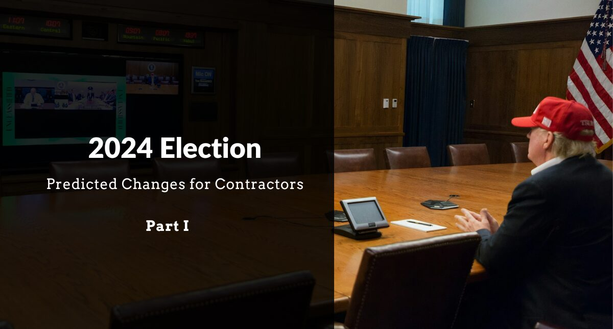

How Will 2024 Election Impact Florida Contractors? (P. 1)

The recent election of President-Elect Donald Trump, and corresponding Republican sweep, may raise hopes among contractors who have struggled with regulatory burdens and compliance pressures for years. Trump’s stated priorities – both tightening immigration enforcement and reducing federal regulation – may bring challenges and opportunities for Florida contractors. Here’s what we except for the coming years if Trump fulfills his campaign promises:
1. Mass Deportation Reduces Competition from Non-Compliant Contractors
One of Trump’s major campaign promises was a strict immigration policy, including a mass deportation plan for undocumented immigrants. While this may cause workforce challenges for some in the industry, contractors who already hire documented workers may see distinct benefits.
- Leveling the Playing Field: For contractors who comply with employment laws and hire documented workers, this policy could mean a fairer competitive landscape. Non-compliant contractors who rely on undocumented labor often operate with lower costs due to reduced labor expenses. With increased enforcement, these companies may find it more challenging to operate, reducing competition and giving compliant contractors an edge in the market.
- Potential for Market Growth: As enforcement reduces the availability of undocumented labor, companies that hire legal workers may experience increased demand. With fewer competitors bidding on projects, contractors following the law can expect greater stability and potentially improved margins.
- Compliance Emphasis on Documentation: Although this policy may reduce competition, contractors should ensure strict adherence to federal work requirements, as immigration enforcement will likely be more stringent. Maintaining thorough employee records and following proper hiring protocols will be essential to avoid any compliance issues.
2. Deregulation Offers Relief for Small Contractors
In addition to immigration reform, Trump has proposed significant deregulation efforts aimed at reducing the operational burdens imposed by federal agencies. We expect his may include agencies such as the Occupational Safety and Health Administration (OSHA), the Environmental Protection Agency (EPA), and potentially, regulations overseen by the various federal contracting agencies. For contractors, this could mean both fewer administrative hurdles, as well as cost savings.
OSHA Requirements
OSHA regulations are often cited by small contractors as onerous and costly, especially for businesses with limited resources to dedicate to compliance. If Trump’s deregulation plans move forward, contractors could see simplified safety requirements, reduced paperwork, and fewer compliance audits. This reduction in administrative burdens could allow contractors to focus more on project execution and less on navigating OSHA’s complex regulatory frameworks.
EPA Regulations and Federal Permitting
Federal environmental regulations, primarily overseen by the EPA, have historically imposed lengthy permitting processes and compliance requirements that can significantly delay construction projects. For contractors, these requirements often translate to extended timelines and increased project costs, particularly for projects involving land development, water management, or other environmental impacts. The Trump administration’s focus on deregulation may include changes to the EPA’s regulatory scope and adjustments to federal permitting processes.
Currently, environmental permits can often take months or even years to secure. If the EPA scales back on these requirements or if permitting is expedited, contractors could see reduced waiting times between project concept and execution. Faster approvals would allow projects to move forward more quickly, giving contractors greater scheduling flexibility and reducing the time spent waiting on the EPA to approve a project.
Federal Acquisition Regulation (FAR)
The Federal Acquisition Regulation (FAR) is the primary regulation for use by all federal executive agencies in their acquisition of supplies and services with appropriated funds. This principal set of rules, which guides approximately $600 billion each year in federal contracting, is as long as the entire Harry Potter series combined. The FAR includes 2,000 pages of regulatory requirements, such as rules for setting pay terms, identifying small-business affiliation, and meeting labor requirements set forth in the Service Contract Act. Likewise, the FAR requires agencies to incorporate various contract clauses in the contracts that directly bind contractors.
Some commentators have pointed out that the government has so many rules for federal contracting, even seasoned government contracting officers aren’t able to keep up with them. This state of overregulation presents similar challenges for contractors, particularly, small businesses with limited administrative resources. Therefore, if Trump chooses to simplify the FAR by rooting out unnecessary requirements, it could make federal projects more accessible to smaller contractors, while reducing the administrative burden and expense for larger firms.
3. Closing
President-Elect Trump’s focus on mass deportation and deregulation will likely reshape the construction industry by reducing competition from non-compliant contractors and easing regulatory requirements. For contractors who have been diligent in following employment laws and maintaining high standards, these changes could create a more level and less burdensome operating environment.
Note: This article is part of a multi-part series. Please check back later for additional updates and analysis by visiting www.readylegal.net.
DISCLAIMER: The information provided on this website does not, and is not intended to, constitute legal advice; instead, all information, content, and materials available on this site are for general informational purposes only.